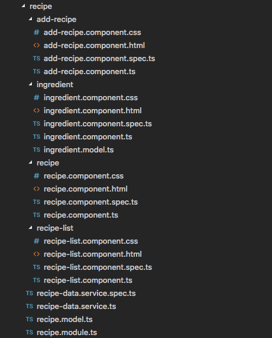

routing & modules
routing
- we're making an SPA, a Single Page Application, but that doesn't mean our whole app should live on one huge, bigly webpage
- we need a way to show different 'pages' (=component hierarchies) and link those to different urls so that bookmarking / back,forward / etc. all works as a user expects it to
- this is what routing is all about
modules
- we've already used modules, everything resides in the AppModule and we've added HttpClientModule, ReactiveFormsModule as we needed them
- modules can be used to encapsulate parts of your app, promoting reusability and separation of concerns
routing & modules
- routing and modules are not inherently linked, you can create a very complex routing app without any modules; or use many modules creating one big page without any routing
- (neither feel like a particulary good idea)
- but you split your app visually in pages, and split the code in modules, these concepts naturally fit together
- and you can do lazy loading if you route to separate modules; so we'll learn about them together
recipe app
- right now our recipe app has one page, where we see a list of recipes and a form to add new recipes
- we'll split these up, and we'll add a menu bar to access both
- when split they will function completely independently, so they will no longer share the recipe cache from AppComponent
- so we'll need to rework everything a bit before we can split them up into two pages
recipe list
src/app/recipe-list/recipe-list.component.ts
@Component({
selector: 'app-recipe-list'
})
export class RecipeListComponent implements OnInit {
private _recipes: Recipe[];
constructor(private _recipeDataService: RecipeDataService) {
}
ngOnInit() {
this._recipeDataService.recipes
.subscribe(items => this._recipes = items);
}
}
we'll add a new RecipeListComponent, which will show the grid as it's shown now, using our existing RecipeComponent
add recipe
src/app/add-recipe/add-recipe.component.ts
onSubmit() {
// ...
this._recipeDataService.addNewRecipe(recipe).subscribe(
() => {},
(error: HttpErrorResponse) => {
this.errorMsg = `Error ${error.status} while adding
recipe for ${recipe.name}: ${error.error}`;
}
);
}
the AddRecipeComponent doesn't change much, we'll simply do the save of a new recipe ourselves
the AppComponent will no longer keep a (cache) list of recipes, and so also doesn't need to update that cache
appcomponent
<app-add-recipe></app-add-recipe>
<recipe-list></recipe-list>
the appcomponent becomes very simple, the ts code becomes an empty file, and the html simply shows two components
we're ready to add the router, let's see that everything still works
routermodule
src/app/app.module.ts
import { RouterModule, Routes } from '@angular/router';
const appRoutes: Routes = [
{ path: 'recipe-list', component: RecipeListComponent },
{ path: 'add-recipe', component: AddRecipeComponent }
];
@NgModule({
imports: [
BrowserModule,
RouterModule.forRoot(appRoutes)
]
});
like everything in Angular, we need to add routermodule to our module
we need to define routes, we can do that right here, first create a routes object
then we need to pass these routes to the RouterModule (more on the forRoot later)
in there simplest form, routes simply associate a URL with a component
so if anyone goes to http://localhost:4200/recipe-list, the RecipeListComponent should be rendered
but where should the component be rendered?
router outlet
src/app/app.component.html
<div class="ui container">
<div class="ui two item menu">
<a class='item' routerLinkActive='active'
routerLink="/recipe-list" >Recipes</a>
<a class='item' routerLinkActive='active'
routerLink="/add-recipe" >Add Recipe</a>
</div>
<router-outlet></router-outlet>
</div>
there should be a router outlet tag somewhere, and that's where the router will render all the components
so we'll replace our app component html with this router outlet
let's add a navigation menu too, so we can test our routes properly
both our routes are defined here (the routerLinkActive adds the 'active' css class when a route is selected)
404
const appRoutes: Routes = [
{ path: 'recipe-list', component: RecipeListComponent },
{ path: 'add-recipe', component: AddRecipeComponent },
{ path: '', redirectTo: 'recipe-list', pathMatch: 'full'},
{ path: '**', component: PageNotFoundComponent}
];
we have two routes, but our webpage only works if we explicitly visit one of those routes, that's not what a user expects
you want the empty route (http://localhost:4200/) to do something sensible too, usually redirect to your 'start' page
the pathMatch is needed here, or this would match with everything (and we only want to match with an exact empty path
note that a redirect is only followed once, so you can't redirect to a path that redirects again
as a last route, you always want a 'catch all', typically to your 404 page
so we'll add a component just to show our 404, with some static content in the html and nothing more
routing module
src/app/app-routing/app-routing.module.ts
import { RouterModule, Routes } from '@angular/router';
const appRoutes: Routes = [ ... ];
@NgModule({
imports: [
RouterModule.forRoot(appRoutes)
],
declarations: [],
exports: [
RouterModule
]
})
export class AppRoutingModule { }
the routing part of an app is often put into a separate routing module
this keeps your main module tidy, and makes for a clear separation of concerns
note that we also export the RouterModule, maybe it's time to talk a bit about modules
modules
- you always have at least one module, the root module, which bootstraps your app
- typically you'll also have several 'feature modules'
- all components, directives, pipes defined in a module should be in the declarations of exactly one module
- you can only use something in a module if you declared it, or imported it
modules
- only one module (the root) should import BrowserModule, others which need ngFor etc should import CommonModule
- you should export all declarables other modules should have access to
- you can export an entire module, which will export all its exports
- you can add services to a providers section, effectively giving them application scope (except for lazy loaded modules, which have their own injector)
modules
- we'll split everything involving recipes of to illustrate how you'd use feature modules
- then we'll lazy load it to show how that's done
- but there's a lot more to say about modules, the official documentation is a good startpoint if that interests you
recipe feature module
most of the work is moving everything in a sensible place
you could simply create a new folder and copy everything, but adjusting all the import paths is rather cumbersome
there is a great plugin to do this Move TS, which adjusts the imports automatically
recipe module
src/app/recipe/recipe.module.ts
const routes = [
{ path: 'recipe-list', component: RecipeListComponent },
{ path: 'add-recipe', component: AddRecipeComponent }
];
@NgModule({
imports: [
HttpClientModule,
CommonModule,
ReactiveFormsModule
...,
RouterModule.forChild(routes)
],
declarations: [
RecipeComponent,
IngredientComponent,
AddRecipeComponent,
RecipeFilterPipe,
RecipeListComponent...],
providers: [ RecipeDataService ]
})
export class RecipeModule { }
the recipe module itself declares all the components we need
import all the external stuff we'll use, note the CommonModule, not BrowserModule
we'll move the RecipeDataService outside of the components and in here, this way all recipe components will share one service
this means you have to REMOVE the provider from AppComponent, otherwise it will still have it's own version!
we'll also define the routes for our components, this way we're self contained and nobody else needs to know about our components
this time we need to forChild static creator, there can be only one forRoot in the root module
these forChild's will reuse the router service provided by forRoot, you can have only one such service active (using forRoot here would result in a runtime error)
app module
src/app/app.module.ts
@NgModule({
declarations: [
AppComponent,
PageNotFoundComponent
],
imports: [
BrowserModule,
AppRoutingModule,
RecipeModule
],
bootstrap: [AppComponent]
})
export class AppModule { }
the app module then becomes a lot smaller, remove all the recipe stuff and only import the recipemodule
app routing module
src/app/app-routing/app-routing.module.ts
const appRoutes: Routes = [
{ path: '', redirectTo: 'recipe-list', pathMatch: 'full'},
{ path: '**', component: PageNotFoundComponent}
];
@NgModule({
imports: [
RouterModule.forRoot(appRoutes, {enableTracing: true})
],
declarations: [],
exports: [
RouterModule
]
})
export class AppRoutingModule { }
and remove the recipe components and routes from the app routing module
we always get the 'page not found', what's going on?
when encountering (what appear to be) router problems, you can always log debugging output
routing
src/app/app.module.ts
@NgModule({
declarations: [
AppComponent,
PageNotFoundComponent
],
imports: [
BrowserModule,
AppRoutingModule,
RecipeModuleRecipeModule,
AppRoutingModule
],
bootstrap: [AppComponent]
})
export class AppModule { }
the problem is that the order matters! the approutingmodule is loaded first and it has a '**' which matches everything
so we never reach the routes of RecipeModule, let's swap the order
route parameters
~/recipeapp$ ~/recipeapp$ cd src/app/recipe ~/recipeapp/src/app/recipe$ ng g c RecipeDetail
installing component create src/app/recipe/recipe-detail/recipe-detail.component.css create src/app/recipe/recipe-detail/recipe-detail.component.html create src/app/recipe/recipe-detail/recipe-detail.component.spec.ts create src/app/recipe/recipe-detail/recipe-detail.component.ts update src/app/recipe/recipe.module.ts
just like in our backend, we sometimes need a parameter to properly process a route
let's add a RecipeDetailComponent to illustrate this
we want to add this to the recipe module, so we can 't simply ng g c RecipeDetail (that would add it to the AppModule)
recipe detail route
src/app/recipe/recipe.module.ts
const routes = [
{ path: 'recipe-list', component: RecipeListComponent },
{ path: 'add-recipe', component: AddRecipeComponent },
{ path: 'recipe-detail/:id', component: RecipeDetailComponent}
];
we'll add a route to our recipe routes to show this recipe detail
adding a route with a parameter, just like in nodejs, is simply adding a : before the parametername
there's nothing more to it, the import was already added by generating the component in this module
recipe detail
src/app/recipe/recipe-detail/recipe-detail.component.ts
export class RecipeDetailComponent implements OnInit {
private _recipe: Recipe;
constructor(private route: ActivatedRoute,
private recipeDataService: RecipeDataService) {
}
ngOnInit() {
const id = this.route.snapshot.paramMap.get('id');
this.recipeDataService.getRecipe(id)
.subscribe(item => this._recipe = item);
}
}
the html of the component is not important right now (we'll simply output the name and ingredient list like our regular recipe component)
so how do you access the parameter here? by injecting the ActivatedRoute in your component
then get the id from the snapshot of your route
after which you can use this id to request the recipe based from the data service
to test this I'll quickly change the links in the app html to two id's, let's try this out
route parameter
src/app/recipe/recipe-detail/recipe-detail.component.ts
export class RecipeDetailComponent implements OnInit {
private _recipe: Recipe;
constructor(private route: ActivatedRoute,
private recipeDataService: RecipeDataService) {
}
ngOnInit() {
const id = this.route.snapshot.paramMap.get('id');
this.recipeDataService.getRecipe(id)
.subscribe(item => this._recipe = item);
this.route.paramMap.subscribe(pa =>
this.recipeDataService.getRecipe(pa.get('id'))
.subscribe(item => this._recipe = item)
);
}
}
so what's going on? when the router routes to the same component, it doesn't get recreated, so the onInit is not re-executed
luckily the route paramMap is an observable, so we can subscribe to changes and update our recipe that way
route parameter prefetching
src/app/recipe/recipe.module.ts
const routes = [
{ path: 'recipe-list', component: RecipeListComponent },
{ path: 'add-recipe', component: AddRecipeComponent },
{ path: 'recipe-detail/:id', component: RecipeDetailComponent,
resolve: { recipe: RecipeResolver} }
];
for some use cases it's not desirable that a component is loaded before its contents are retrieved, 'undefined'
variables are accessed

avoiding this can be done by prefetching the data using a 'resolve guard'
there are many other guards available, most of them check for access somehow (logged in? allowed to load?)
recipe resolver
@Injectable()
export class RecipeResolver implements Resolve<Recipe> {
constructor(private recipeService: RecipeDataService) {}
resolve(route: ActivatedRouteSnapshot,
state: RouterStateSnapshot): Observable<Recipe> {
return this.recipeService.getRecipe(route.params['id']);
}
}
such a resolver is a service very similar to our RecipeDataService
but we implement the generic interface Resolve (from @angular/router)
which means overriding the resolve method, which gets a snapshot of the route and routerstate as parameters, and should return an Observable
to get this observable, we use the id param and the RecipeDataService like before
in 'real' code these resolvers typically need quiet a bit of error checking, but space is at a premium on these slides 'exercise for the reader'
recipe detail component
ngOnInit() {
this.route.data.subscribe(item =>
this._recipe = item['recipe']);
this.route.paramMap.subscribe(pa =>
this.recipeDataService.getRecipe(pa.get('id'))
.subscribe(item => this._recipe = item)
);
}
we have to change the ngOnInit of our detail component, subscribing to the paramMap would still work, but of course we want to take the recipe from the resolver, not fetch it again
so we subscribe to the data attribute of the route instead, and extract the 'recipe' from it
(remember we called it recipe when we specified the resolver)
route parameter prefetching
src/app/recipe/recipe.module.ts
@NgModule({
declarations: [],
imports: [],
providers: [
RecipeDataService,
RecipeResolver
],
})
export class RecipeModule { }
the RecipeResolver, which is created as an injectable, still needs to be provided somewhere
we'll add it to the list of providers in our recipe.module, as we won't need it outside this module
module lazy loading
- as the last thing for today, we're going to adapt our module so it's lazy loaded
- when you create bigger apps, it's important to split them in feature modules and lazy load as much as possible
- everybody expects webpages to load fast, the days it was acceptable to wait a (few) minute(s) for a page to load are long gone
feature module
const routes = [
{ path: 'recipe/list', component: RecipeListComponent },
{ path: 'recipe/add', component: AddRecipeComponent },
{ path: 'recipe/:id', component: RecipeDetailComponent,
resolve: { recipe: RecipeResolver} }
];
before we get to the lazy loading, let's clean up our recipe module a bit, we should change all recipe routes to use the same prefix url (and change the same links in our AppComponent nav)
we will specify this prefix where we load the module, so let's remove it here (or we'd have to go to /recipe/recipe/list)
app routing module
src/app/app-routing/app-routing.module.ts
const appRoutes: Routes = [
{
path: 'recipe',
loadChildren: 'app/recipe/recipe.module#RecipeModule'
},
// { path: '', redirectTo: 'recipe/list', pathMatch: 'full'},
{ path: '**', component: PageNotFoundComponent}
];
then inside our app routing module we'll lazy load the recipe module
we simply add a route to our prefix path, and add the loadChildren key too, with the feature module we want to load
the order is important, load these before your '**' path
notice that I updated the redirect path too, to the new path layout
but for now I'm even going to comment it out, if I always redirect to something in the RecipeModule, I can't show the lazy loading at work
we also still need to remove the RecipeModule as a dependency from the app.module, since we're lazy loaded
that's it!, let's try this out
prefetch lazy loading
src/app/app-routing/app-routing.module.ts
@NgModule({
imports: [
RouterModule.forRoot(appRoutes,
{preloadingStrategy: PreloadAllModules})
],
declarations: [],
exports: [
RouterModule
]
})
export class AppRoutingModule { }
you can prefetch lazy loaded modules, so: they are lazy loaded, but you start to load them immediatelly.... what?
this makes sense though, if modules are not used on the startpage, lazy loading them makes that page loads faster, in the meantime you download them
then if the user navigates he doesn't have to wait for the modules to load, you do this by adding a preloadingStrategy
so simply load everything you need for the startpage and lazy load but prefetch everything else
it's best to restart your angular when you change how modules are loaded
sometimes it makes more sense to selectively preload modules, not prefetching parts that are rarely used (e.g. an admin portion of your site)
custom preloading strategy
src/app/app-routing/SelectivePreloadStrategy.ts
import { PreloadingStrategy, Route } from '@angular/router';
import { Observable } from 'rxjs/Observable';
import 'rxjs/add/observable/of';
export class SelectivePreloadStrategy implements PreloadingStrategy {
preload(route: Route, load: Function): Observable<any> {
if (route.data && route.data.preload) {
console.log('preload ' + route.path);
return load();
}
return Observable.of(null);
}
}
to illustrate this, let's create a preloadingstrategy that only preloads certain modules
the preload method has two parameters, the route that is being considered, and the function that will perform the loading, you decide if you call the function or not (and hence preload)
in this simple example, let's preload if the preload data parameter is passed in the module specification, and a log statement to show this works
now we still need to update the routing module to use this
custom preloading strategy
const appRoutes: Routes = [
{
path: 'recipe',
loadChildren: 'app/recipe/recipe.module#RecipeModule',
data: { preload: true }
}, ... ];
@NgModule({
imports: [
RouterModule.forRoot(appRoutes, {
preloadingStrategy: SelectivePreloadStrategy
})
],
providers: [SelectivePreloadStrategy], ...
})
export class AppRoutingModule {}
first add the data property with preload to the route
then tell the routermodule to use our new strategy to preload everything
and make sure the strategy is provided, that's it
restart and let's try this
there's more
- we haven't talked about child routes (think a router-outlet inside a component which is displayed inside another router-outlet)
- I've said nothing about secondary routes (think two router-outlet's next to each other)
- and there's more to say about guards, but we'll get back to that next week (authentication guards)
- but you should have a good grasp on the basics of routing and modules and how you can use them in your own apps now
summary
- use the RouterModule to define your routes
- you should have one forRoot() and zero or more forChild() routes defined
- routes can have parameters, and guards, you can preload these parameters if needed
- split your app into several feature modules, and lazy load them, this will improve your startup time (and your bandwidth usage if you selectively preload)